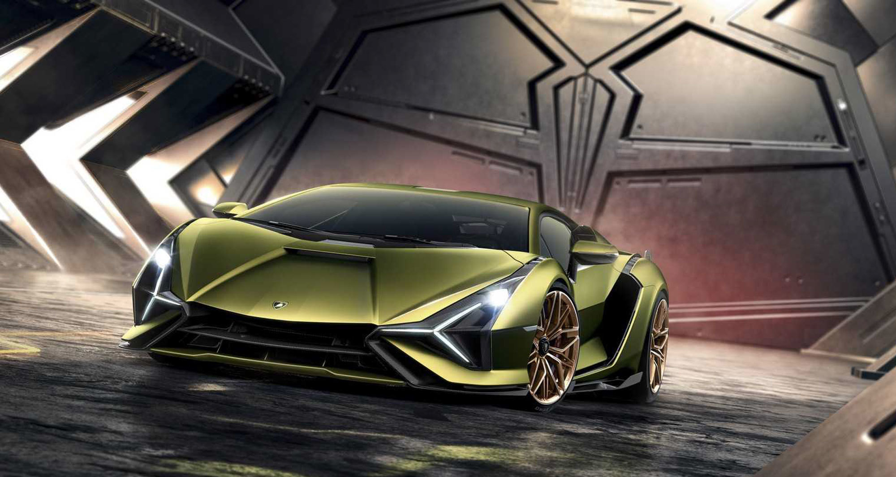
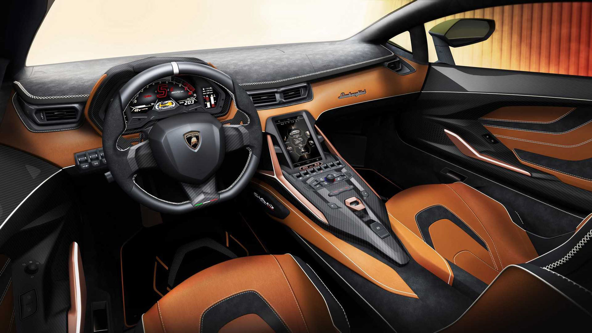
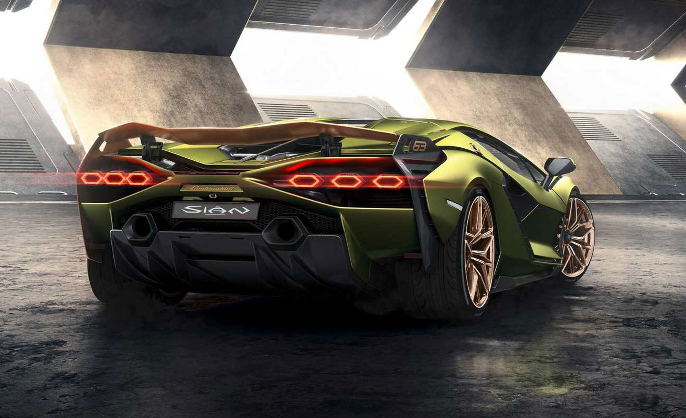
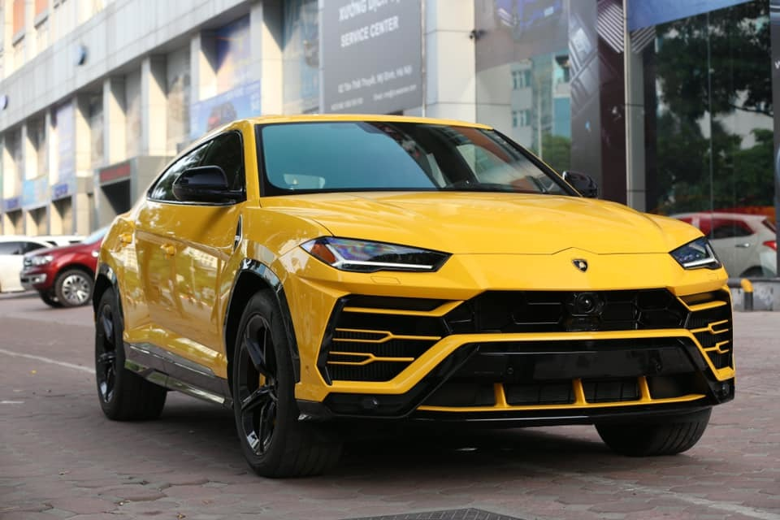
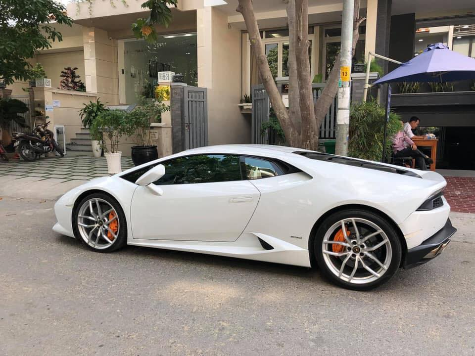
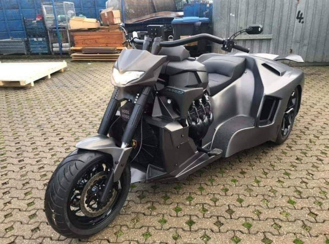

Lamborghini
Cập nhật bảng giá xe Lamborghini tại Việt nam tháng 08/2021. Các mẫu xe gồm: Lamborghini Aventador SVJ, LP750-SV, LP700-4, Aventador S Coupe, Aventador S Roadster, Huracan LP610-4, Huracan LP580-2, Urus...
Lamborghini
Cập nhật bảng giá xe Lamborghini tại Việt nam tháng 08/2021. Các mẫu xe gồm: Lamborghini Aventador SVJ, LP750-SV, LP700-4, Aventador S Coupe, Aventador S Roadster, Huracan LP610-4, Huracan LP580-2, Urus...



‘Siêu bò’mạnh nhất trong lịch sử Lamborghini, giá gần 84 tỷ
Sức mạnh của Lamborghini Sian được truyền đến các bánh thông qua hộp số tự động 7 cấp với tính năng sang số thích ứng tùy thuộc vào chế độ lái.
Thời gian tăng tốc từ 0-100 km/h của Lamborghini Sian chưa đầy 2,8 giây, ngang mức của Aventador SVJ . Vận tốc tối đa của siêu xe này đạt mức 350 km/h.
Được biết, Lamborghini Sian có giá bán khởi điểm 3,6 triệu USD (khoảng gần 8,4 tỷ đồng). Siêu xe này sản xuất giới hạn 63 chiếc và hiện toàn bộ số xe này đã được đặt mua từ trước.
Lamborghini Urus 21 tỷ màu độc về tay đại gia Sài Gòn
Cập cảng Hải Phòng hồi đầu tháng 12/2018, chiếc siêu SUV Lamborghini Urus thứ 3 về Việt Nam theo dạng nhập khẩu tư nhân vừa tìm được chủ nhân mới.
Trao đổi với phóng viên, anh Sơn Tùng đại diện đơn vị nhập khẩu tư nhân chiếc xe này ở Hà Nội cho biết: "Chiếc siêu SUV Lamborghini Urus màu vàng chanh này từng gây sốt khi về đến Hà Nội. Xe vừa được bán thành công cho một chủ nhân ở Sài Gòn với giá 21 tỷ.

Lamborghini Huracan sau 3 năm sử dụng, bán lại 13 tỷ đồng
Mới đây, chủ nhân của chiếc Lamborghini Huracan đã quyết định "chia tay" sau 3 năm gắn bó, giá bán lại của chiếc xe này lên tới 13 tỷ đồng.
Chủ nhân của chiếc xe đánh giá "xe đẹp như mới".
Lamborghini Huracan 2016 được bọc da cao cấp cùng hệ thống âm thanh trên Huracan mới, với bộ khuếch đại 10 kênh và 10 loa trong cabin xe.

Môtô đầu “khủng long” đuôi Lamborghini gây sốt dân mạng Việt
Theo các dân mạng Việt Nam thì mẫu xe này đã được cập cảng và chuẩn bị đưa về cho chủ nhân. Hiện chưa rõ “tay chơi” nào là người chi tiền để mua mẫu môtô độc lạ này.
Các hình ảnh mà dân mạng đang chia sẻ cho thấy đây là một mẫu xe rất khác lạ. Thiết kế theo phong cách xe ba bánh, đầu trước với tay lái rộng vòng ra trong khi bộ đèn pha nhìn như cái đầu của một con khủng long bạo chúa